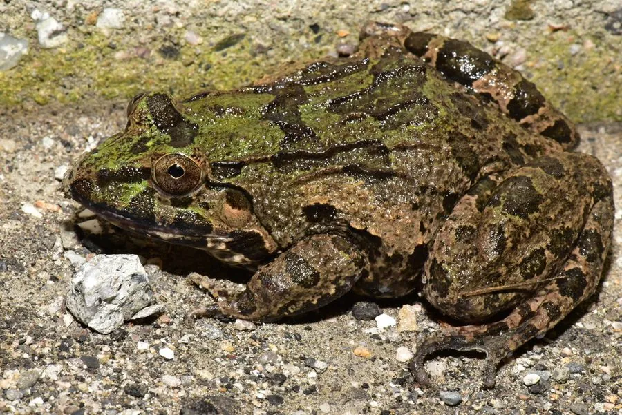

两栖动物 · 动物界
海蛙 Fejervarya cancrivora

少数能适应咸水的蛙类之一，生活在红树林与沿海滩涂，捕食螃蟹，蝌蚪可在半咸水中发育，因而被称为食蟹蛙。
- 分类
- 门脊索动物门纲两栖纲目无尾目科叉舌蛙科属陆蛙属
- 栖息环境
- 红树林、沿海滩涂、咸淡水沼泽、河口与稻田，耐盐能力强
- 地理分布
- 中国海南、台湾、广东、广西沿海，以及东南亚和南亚的海岸地区
- 保护级别
- IUCN 无危（LC）
物种志
海蛙雌蛙体长 70–90 mm，雄蛙 60–70 mm，体型粗壮。头部略扁，吻端钝圆，背部皮肤粗糙并具疣粒，体色灰褐、黄褐或橄榄褐，常带深色斑纹，后肢有横纹，趾间蹼发达，适合在泥滩和浅水中活动。
它们分布于中国海南、台湾、广东、广西沿海，以及东南亚和南亚的海岸地区，栖息于红树林、沿海滩涂、咸淡水沼泽、稻田与河口。海蛙是少数能耐受咸水的两栖动物，成蛙可在盐度较高的水中活动，蝌蚪也能在半咸水中发育。它们多在夜间活动，捕食螃蟹、虾、昆虫和小鱼。繁殖期与雨季相关，卵产于浅水或泥滩上的水洼中。由于红树林被围垦和沿海开发，其栖息地受到一定压力，但总体种群仍较稳定。
形态与习性
- 食性螃蟹、虾、昆虫和小鱼
- 体长雌蛙 70–90 mm，雄蛙 60–70 mm
- 繁殖雨季产卵于浅水或泥滩水洼
- 耐盐成蛙与蝌蚪均可耐受半咸水
- 习性夜行性，栖于红树林与滩涂
- 别名因捕食螃蟹而被称为食蟹蛙
趣味知识
- 海蛙是少数能在咸水中生活的蛙类，蝌蚪也能在半咸水中发育。
- 它擅长捕食螃蟹，英文名直译就是食蟹蛙。
- 退潮后的红树林泥滩上，常能看到它们蹲在洞口等待猎物。